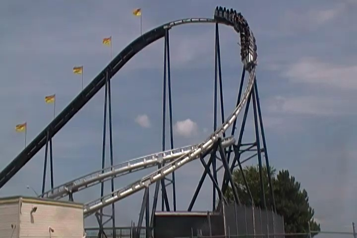
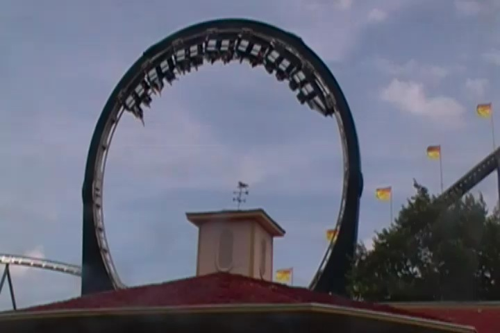
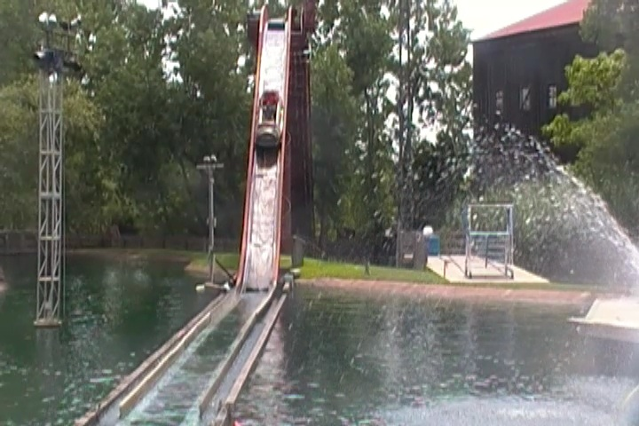
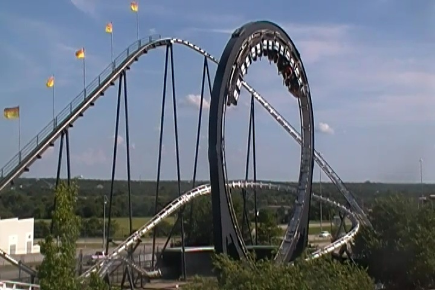
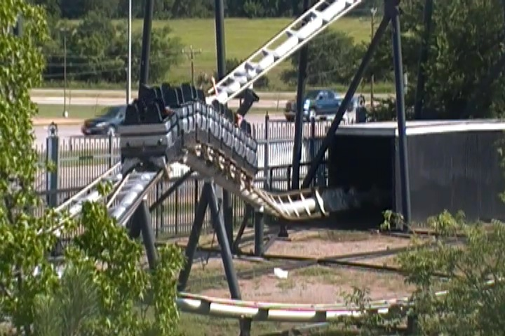
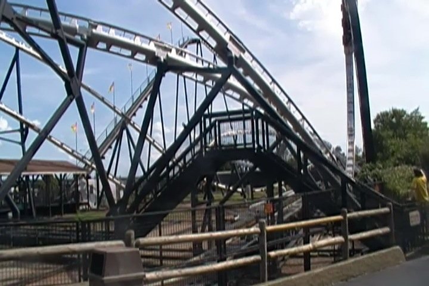
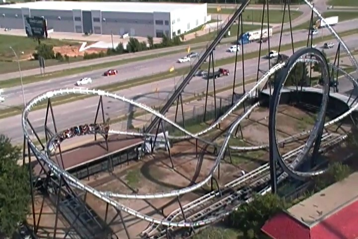

All right. Our two days at Silver Dollar City were up and it was time for us to move on. So we drove onto Oklahoma City (the way we should've originally gone. Not through Arkansas). It was a meh drive with it constantly raining the entire way. And at around 2:00, we officially made it to Frontier City, a small little park in Oklahoma City.
Ah crap. I made a wrong turn and took us back to Knotts Berry Farm. Dammit!!! I didn't wanna go home yet.

Nope Silver Bullet here is a Schwarzkoph Looping Star. And hey, here, its actually Silver.

Hey. These Looping Stars are really awesome rides. Its a shame that more aren't being built.
Warning. Silver Bullet is not a single rider friendly ride.
All right. Up next, we checked out the parks wooden coaster, Wildcat.
The line featured all these photos of Wooden Coasters. Hey, I rode both of those coasters, and one of them just recently. Hmm, I feel like one of those rides has also been all over the news lately. But why?
Meh. It was ok.
I know Cody is going to disagree with me 100% when I say this, but I found this ride to be a cruiser snoozer. I do!! I really thought that!!!
Though I will give it this. It had a beautiful setting. So it was at least pretty while riding.
A couple things to note about this gift shop. First off, its the very first thing you walk into when you enter the park. So you're immedietly entriced to buy all these souviners and trinkets.
Second of all, if you want to ride Dimaondback, the entrance is right in the gift shop. So yeah. This gift shop is unavoidable.
Hey. I finally get to try out one of those screwed up Arrow Shuttle Loops. =)
I gotta admit. These are much better rides than I was expecting.
You get a really nice pop of ejector air going down that drop backwards.

I didn't ride the log ride here, but it did look like a fun ride.
SPLOOSH!!!!
Ok. That has to be the most screwed up looking Skycoaster I've ever seen.
Hey. I love Inverters, so I'm glad we rode one here. =)
Ok. Just one more credit to get at Frontier City.
Hey. Its another Jr. Vekoma SLC. And just like Movie Park Germany, it only runs with lap bars.
Vekoma really needs to make these lap bars on their Kiddy SLCs mandatory
I feel like some re-rides on Silver Bullet are definetly in order.

The Knotts Silver Bullet is fun and all, but its not as rare as this ride. =)

TAKE THE TUNNEL!!!!!

Ok. Now if there's only one problem I have with Frontier City, it'd be this. Their security. They had told me that I could not take any off-ride shots of Silver Bullet because of the fact of the Texas Giant accident a couple days before and "They don't want to be associated with it." *Sigh* Where do I begin with all the things wrong with this? I'm gonna probably write an article on this later that explains just how wrong, twisted, and f*cked up that logic is, but let me just say this for now. I had never associated this park at all with the New Texas Giant accident for obvious reasons. But if you come in and try and censor me (and yes, this is censorship) because you feel that my off-ride shots of Silver Bullet connect you to the New Texas Giant accident. Well then I have to ask the question "What are you hiding that would connect you to the accident?" I NEVER felt un-safe for a single moment at Frontier City. Everything seemed 100% safe, 100% up to date, and working perfectly as it should have been. But if you're so paranoid about keeping your park hush hush and don't want to be associated with something that on the surface, I CLEARLY see you not associated with in even the slightest bit, well then I have to ask, "What's under the surface that you're trying to hide? Do the Oklahoma Saftey Inspectors know about this? And if you do sense a connection to the New Texas Giant that makes you feel unsafe, why are you instead of fixing the problem, just masking it and then censoring everything and keeping it all hush hush?" I know I'll write an entire article/essay about this later. I just wanted to throw that out there for the moment until I can fully tackle this bullsh*t.
Here security guard. I wasn't originally planning on releasing a Silver Bullet Raw Footage video, but I decided to make this just for you. Enjoy.
Why is that all the enterprises at international parks run really well while all the U.S ones (except for Lagoon) have really lame programs?
In case you ever get lost at Frontier City.
This park has a great Wild West theme.
If you're a fan of Western Themed Parks, then this is a good place for you.
Wait, am I in Oklahoma or Mexico?

"Oh no!!! Another big rollercoaster accident just happened!!! Good job Kevin!!! Now we're forever associated with the New Texas Giant accident because of your offride shots. Thanks a lot asshole!!!"
Bye Frontier City. I had a lot of fun here and really enjoyed the park (aside from that camera problem. Getting offride shots while constantly looking over my shoulder for that guard REALLY sucks). I know a couple of my friends know the manager of this park. So hopefully my next visit will be much better with no problems cause I do want to come back to this park.
Ok. After our time at Frontier City, we hung out with our host, who is completely awesome. Later for dinner, he took us out to a Middle Eastern Resteraunt that I think one of his friends owns and this resteraunt was one of the coolest resteraunts I've ever been in. First off, you can just eat on the floor with your shoes off in that section right up there, which while felt weird at first, really was comfortable. The food consisted of really good tea, rice, really good sauce, chicken, and lamb. And it was all really good. One custom I quickly learned with Islam dining ettiquite is that you eat with your hands (And no, its not as easy as it sounds, but I got the hang of it). It was totally awesome and not at all what I was expecting when going to Oklahoma City. I highly recommend this resteraunt to anyone visiting.
(Photo by the Kasba House.)
We later went and had some fun in the hot tub cause this night is just crazy.
After that insanity, we went back to our hosts house, had some shots, drank some of the best Tea I ever had, and smoked some Hookah. Now I'm not a smoker, I have never smoked a cigarette in my entire life nor do I plan on anytime soon. But I enjoyed Hookah (and yes. I know that smoking hookah is just as bad for you as smoking cigarettes.) I liked it, but I'm not gonna go out to a Hookah Lounge any time soon.